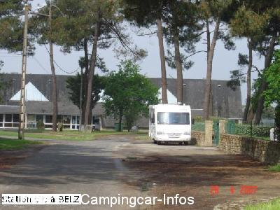
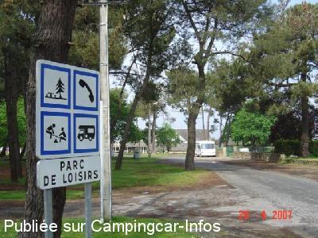

APN = Parking toléré jour/nuit de :
BELZ
(N° 181)
Accès/adresse :
Rue des Sports
Parc de Loisirs
56550 BELZ
Parc de Loisirs
56550 BELZ
Latitude : (Nord) 47.66936° Décimaux ou 47° 40′ 9′′
Longitude : (Ouest) -3.17713° Décimaux ou -3° 10′ 37′′
Tarif : Gratuit
Services :
Jeux pour enfants
Autres informations :
Possibilité de passer la nuit

Le 30/05/2007 par christianbrieuc

Le 30/05/2007 par christianbrieuc
de
Christian BRIEUC
le 28/04/2007 :
Pause déjeuner. Endroit sans intérêt mais calme en pleine journée. A voir de nuit.
Pause déjeuner. Endroit sans intérêt mais calme en pleine journée. A voir de nuit.